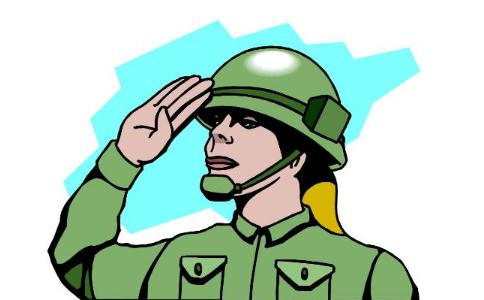

2005年12月2日，父亲第二次从鞍山来上海，还是穿着绿色的旧军装，提着只黑皮箱。
父亲当过10年兵，转业后也常以军人的标准来要求自己。他时不时地就会来一句“我是个军人”。母亲在他退伍那年和他离婚了。那时我13岁，我一直以为母亲会带着我走，可是没有，她把我留给了父亲。所以很长一段时间里，我对父母都心存恨意，尤其对父亲，我至今都认为，如果他肯早点转业回来，这个家就不会散。
父亲那次来，是看孙子的。我在电话里告诉他小婷生了的时候，他停了一会儿，丢来一句：“我过去看看。”
我到火车站接他，开了辆新车。他有点惊讶，摸了摸说：“你买的？”
我点了点头。
他给了我一拳，说：“混得不错啊。”
我揉着被打得生疼的胳膊说：“你不打我就难受是吧？”可我的心里却很高兴。
父亲给孙子买了块玉坠子做礼物，水头不错，就是小，拴在一根红线上。岳母接过来，系在孩子的手腕上，说：“亲家真是好眼光，给婴儿戴大小正好。”话里有话。父亲笑了笑，没接口。
那天看过孩子之后，他没睡在家里，而是去小旅馆。我知道拗不过他，也就随他喜欢吧。反倒是小婷过意不去，她说：“爸，家里有地方，干吗睡外面啊？”
父亲说：“我打呼噜响，吵你们就算了，吵到孩子不好。”
我冲小婷使了个眼色，让她别劝了。父亲是不会住的，因为这里是他的心病。
小婷是上海人，她爸是普普通通的公务员。我认识小婷那年，他刚刚退休。岳母以前是下岗工人，后来成了居委会的一员。很普通的
2004年，我向谈了4年恋爱的小婷求婚，小婷没犹豫就答应了。但是她的母亲，开出了张让我心惊肉跳的礼单。其实现在看起来，一点不过分：买房，办酒席，礼金2.8万。女方买车，装修，置家具。然而那一年，上海的房价已经开始离谱了，对工作不满两年的我来说，即便按揭，也捉襟见肘。
万般无奈下，我给父亲打了电话。父亲说的还是那句“我过去看看”。
他来的那天，从火车站直接去了小婷家。路上，我问他，想好怎么办了？他说：还能咋办？和人家父母谈谈呗。
说实话，我没想过两家父母会以谈判的形式完成了第一次见面。女方主力就是我未来的岳母，而父亲一上来就拿出了撒手锏。他从贴身的衣袋里，掏出一张存折摆在桌上，说：“少军那儿有多少，我不太清楚。我退伍的安置费和这几年攒的都在这儿了，一共4.6万。多了，真没有。但是，我想说，我是个军人，我这辈子教给我儿子的，就是个‘正’字。小婷肯嫁，我保证她不受委屈。我儿子要做了对不起她的事，我就先削（打）他。”
小婷的母亲听完了，接不下话。但一直不说话的小婷父亲却说：“那就这么定了吧。”
我和小婷远远地交换了眼神，情不自禁地笑了。
小婷的父母拿出一套房子给我们，买车的事以后再说，父亲的存款用来装修、买家电，剩下的，我和小婷自己筹。
尽管小婷的父母面子上还算礼貌客气，但他们自上而下的目光，还是刺伤了父亲。那种被物质支撑着的优越感，是他无论怎样挺直脊背都无法阻挡的。
父亲几乎很少来上海。我开了家小公司，生意做得最风光的时候，我曾准备订机票接父亲来上海玩，可他一口回绝了。他在电话里说：“有钱也别乱花，攒起来。你还有孩子呢，将来那就是无底洞。”
其实，如果再细分下来，我和他共处的四五年里，有一半时间无话可说，一半的一半他在教育我，一半的一半的一半，他在揍我。记忆里，足够温馨的片段，少之又少。
父亲再来上海，是2008年年底。我的小公司没能挺过那场金融危机。债主上门的日子，我天天躲在家里不见人。小婷抱着孩子回了娘家。那段闷在家里的日子，我除了喝酒就是上网，只要清醒，就会倍感前途灰暗无光。
父亲从小婷嘴里知道了我的近况，从老家赶来了。他一进门，劈头就问：“出了这么大的事，怎么不告诉我呢？”
我说：“告诉你有用吗？除了骂两句，你能解决什么问题？”
他说：“我这儿有15万，你可以拿去用。”
我笑了一声，说：“你知道我欠了多少钱？15万够干什么？”
父亲说：“够干什么不重要，重要的是你不能这样活着。别忘了你是军人的儿子，你给我活得有志气点……”
我打断他说：“你别再用这句话自欺欺人了。你在部队里混了10年后转业，在家里，你连我妈也留不住。我呢，结个婚还要住丈母娘的房子。你是军人怎么了？也不能改变你是个失败的人！”
最后，父亲用拳头结束了这场对话。那一年，他六十有二。可是10年的兵不是白当的，他依然强悍地把我按在地上暴打了一顿。那天他走的时候，把存折摔在我脸上说：“真对不起啊，你有个失败的爹。可你也有儿子呢，麻烦你别活得像你爹那么失败。”
那是父亲最后一次来上海，也是他最后一次揍我。我躺在地上，浑身没有不疼的地方。可我心里却舒坦了。
我申请了破产，用父亲的钱，还了一些非还不可的债。2009年，也许是我人生中最艰难的一年，但我还是挺过来了，找了份朝九晚五的工作。只是我与父亲的联系变得更少了，或许是因为我们揭了彼此的伤疤。偶尔，他打电话来，也是想听听孙子的声音，和我几乎无话。
2010年年末，我接到了一位远房姑姑的电话。她的小女儿要来上海考“上戏”，向我询
我问她，我父亲怎么了？她说：“你就回来看看他。他想你想得厉害，又嘴硬，不会说。”
于是春节长假，我一个人回了鞍山。这么久不回去，印象中的小城，变得太多了，许多小区都翻建了新的房子，不过我家的那幢老楼还在。我敲开门，才知道已经易主了，房子几年前就卖了。我顿时知道了当初那15万是哪儿来的。老邻居告诉我说，父亲在小学门口开了家小卖部。我找过去的时候，已经傍晚了。是间极简陋的门面房，陈旧的柜台里堆着文具玩具，后面拉着布帘，摆着一张行军床。房间里生了炉子，他在一旁，翻炒着一锅土豆
我说：“爸，是我，回来看你来了。”
他这才走过来，捶着我的肩膀，老泪纵横。他真的老了，从来不掉泪的他，却在我面前哭了。而我站在他身边，一直在悄悄打量着这家小店。我真想不出，在这个四面透风的小屋里，他是怎样熬过北方寒冷的冬天。
那天晚上，父亲翻出瓶战友送他的好酒，喝得酩酊大醉。我和他挤在那张行军床上，很久都睡不着。他满是硬茧的手，始终拉着我不放，好像一松开，我就会消失不见。
3个月后，父亲突然过世了。这个“突然”只是对我而言。其实他早在2007年就查出了肝癌，但他选择了一套最经济、最“超前”的治疗方案——气功疗法。医生说，他能活这几年算是个奇迹。
从鞍山市区到千山旅游区的路上，有个叫双龙山的墓园。我把父亲葬在了那里，很简单的黑色墓碑，镶着他英气勃发的照片，背面我请工匠刻了两行碑文——他是永远不退伍的军人，他是成功而伟大的父亲。